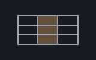

A reckoner seed: csv over the guarded builtins — machines/seeds/seedcsv.shoddy

seedcsv bridges csv:
CSVLOAD CSVREAD CSVSAVE CSVWIDTH CSVCOLUMN CSVCOLUMNNUMS CSVHEADS
CSVBODY CSVGET CSVWHERE CSVPAIRS. A "document" at the keyboard is
exactly what csv.shoddy's own comments call it: a
LIST of LISTs of STRINGs, no new
stack case needed. A "sheet" is never carried as its own cell —
CSVHEADS, CSVBODY, CSVCOLUMN,
CSVCOLUMNNUMS, CSVGET, CSVWHERE and
CSVPAIRS all rebuild the header split from the document cell
each time they are called, which is what keeps the value set untouched.
CSVLOAD and CSVSAVE do not call
CsvLoad/CsvSave, whose ReadFile and
WriteFile abort — CSVLOAD instead runs
TryReadFile and then the total reader, matching its own
success-or-error variant rather than the wrapper that turns a parse failure
into an Error. CSVGET stays strict:
csv.shoddy's own CsvGet Errors
rather than defaulting when the column or the row is short, on the ground
that a file whose header promises a column it does not deliver is a file
worth hearing about — CSVGET keeps that judgment and only
trades the Error for a refusal. CSVWHERE and
CSVCOLUMN/CSVCOLUMNNUMS lean on the total column
readers instead, since a WHERE clause or a column scan that stopped at the
first ragged row would be less useful than one that treats a missing cell
as empty.
A column is named either way — by its header, or by its
1-based position — because each is the natural spelling somewhere: a header
when the file carries one worth reading, a position when it does not, when
the header is noise, or when the column is simply "the third one". The
number form resolves to the header at that position and then reads
by name like everything else in this seed, so a position and a name address
the same column by the same route; csv.shoddy's whole
column API is name-based, and a second addressing scheme that disagreed with
it on a duplicated header would be worse than inheriting the one it has. A
position outside the header row is refused rather than clamped, since
0 and 99 are both typos on a four-column file.
This is the worked data session R2.9 asks for, reachable from the entry line in two:
Let st0 = RckSeedStats(RckSeedCsv(RckNew()))
Select Case RckEval(st0, Chr(34) & "dat/sales.csv" & Chr(34) & " CSVLOAD 3 CSVCOLUMNNUMS MEAN")
Case RckNext(st1, out)
Print(RckShow(st1)) ' x: 12483.61A mistyped path answers rather than ending the session:
RckEval(st0, Chr(34) & "dat/missing.csv" & Chr(34) & " CSVLOAD")
' ERR: cannot read dat/missing.csv (no such file); the stack is exactly as it was| Word | Description |
|---|---|
| CSVLOAD ( path -- doc ) | The CSV file at path, parsed to a document (a list of rows of cells); a refusal if it cannot be read or does not parse. |
| CSVREAD ( text -- doc ) | CSV text already on the stack, parsed to a document; a refusal if it does not parse. |
| CSVSAVE ( path doc -- ok ) | Write a document to path as CSV; True on success. |
| CSVWIDTH ( doc -- n ) | The width of the widest row in the document. |
| CSVHEADS ( doc -- list ) | The document's first row, as the column headers. |
| CSVBODY ( doc -- doc ) | The document without its header row. |
| CSVCOLUMN ( doc col -- list ) | One column, top to bottom, as strings; col is a header name or a 1-based position, and a header the document does not name or a position outside it is refused. |
| CSVCOLUMNNUMS ( doc col -- list ) | One column, top to bottom, read as numbers (0 for a missing or short row); col is a header name or a 1-based position, refused the same way. |
| CSVGET ( doc row head -- s ) | The cell in row under the named column, taken from doc's header; refuses an unknown column or a row that stops short of it. |
| CSVWHERE ( doc head v -- doc ) | The rows whose named column reads v. |
| CSVPAIRS ( doc row -- list ) | row zipped with doc's header as an association list — seeddict's DGET, DHAS and DKEYS read it unchanged. |
No machine or mill includes it yet. A mill claims it by folding
RckSeedCsv over its reckoner state.
| Machine | Why | |
|---|---|---|
| csv | The domain this seed bridges: CsvReadAs, CsvText, CsvSheetOf, CsvHeads, CsvBody, CsvGetOr, CsvNumOr and CsvWhere. | |
| cuttle | The Cell type a document's rows and cells are built from. | |
| reckoner | RckReg, RckSeeding and the argument readers every registered word is built from. | |
| seq | Zip pairs a row with its header for CSVPAIRS; list plumbing under every row and document reader. |